變身分鏡接入
沿用13張先前生成原檔；沒有重新生圖。遊戲標題左上「重播變身」可觀看。五段著裝特寫依序播放，其餘台詞點按繼續。
開啟遊戲 · 測試紀錄
手機與橫向截圖
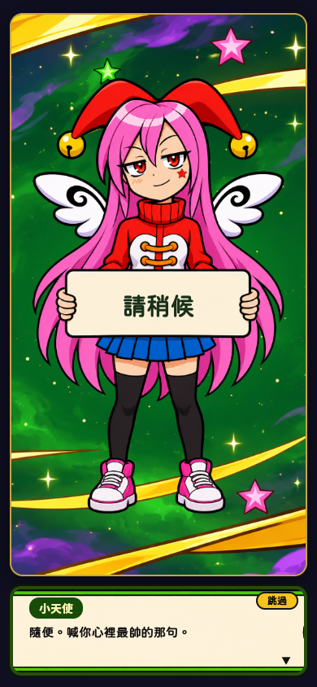
小天使舉牌 · 390px等待插鏡 · 390px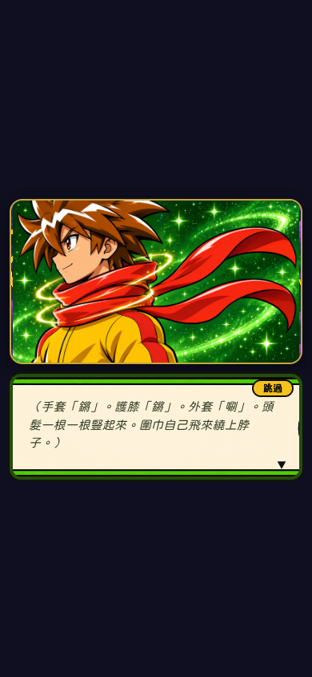
著裝特寫 · 390px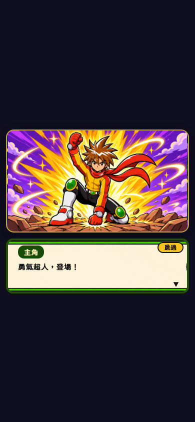
登場定格 · 390px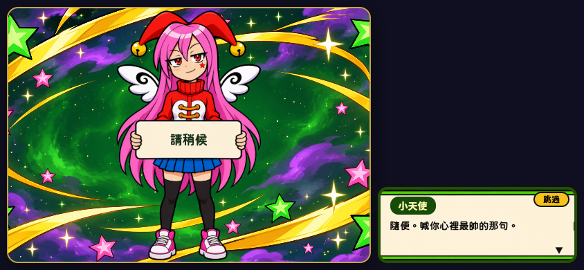
小天使舉牌 · 844px等待插鏡 · 844px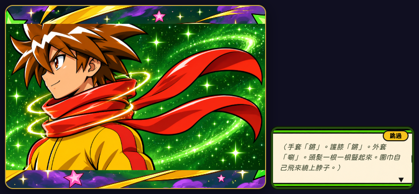
著裝特寫 · 844px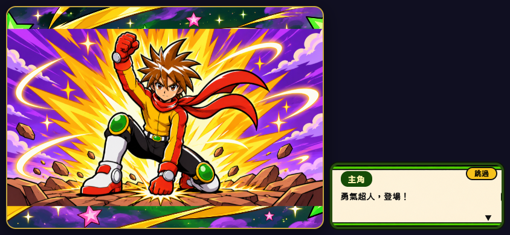
登場定格 · 844px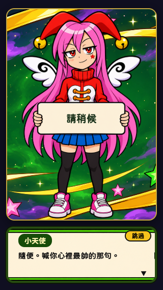
小天使舉牌 · 320px等待插鏡 · 320px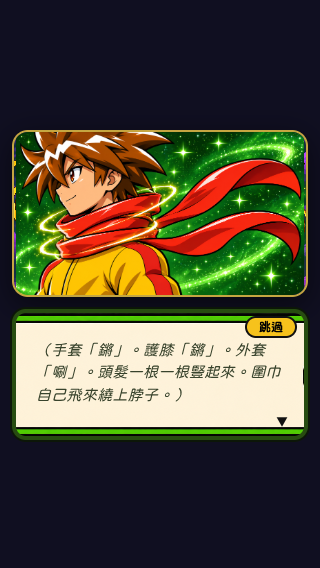
著裝特寫 · 320px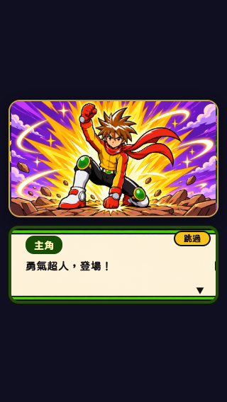
登場定格 · 320px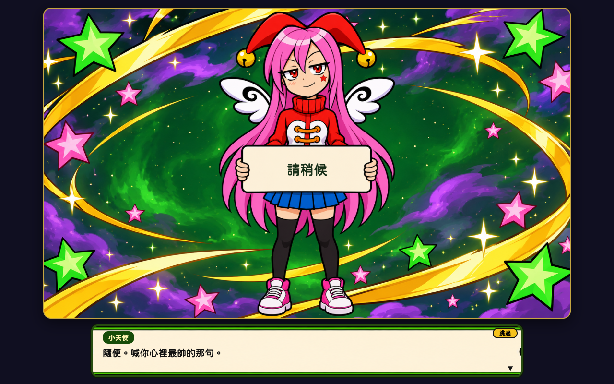
小天使舉牌 · 1280px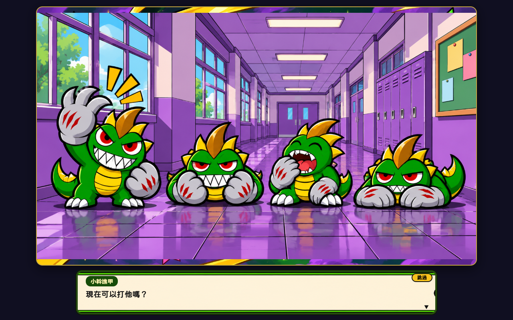
等待插鏡 · 1280px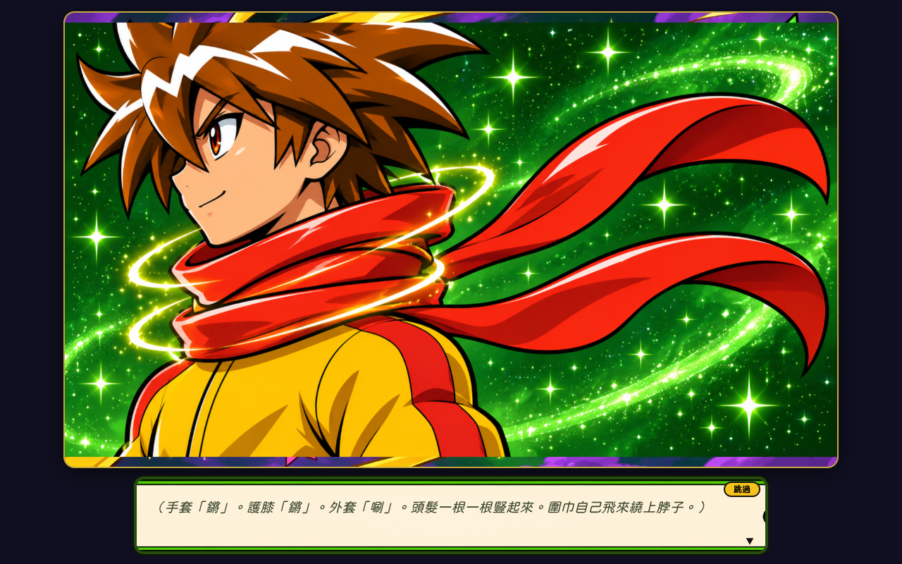
著裝特寫 · 1280px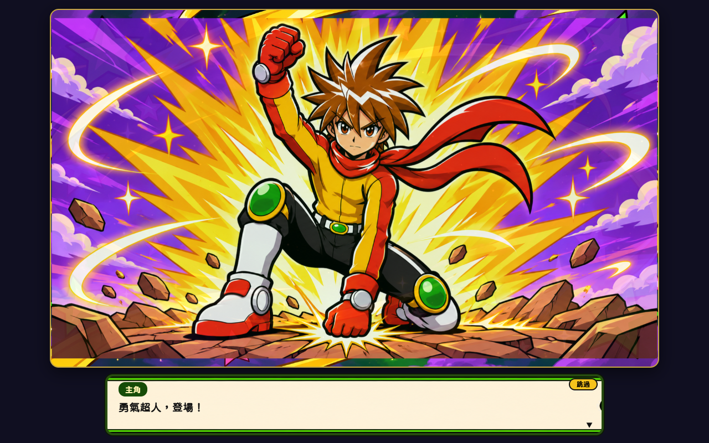
登場定格 · 1280px既有13張原檔
tf_bg_stars.pngtf_glove.pngtf_hair.pngtf_jacket.pngtf_knee.pngtf_pose.pngtf_scarf.pngtf_sign.pngtf_silhouette.pngtf_waiting_1.pngtf_waiting_2.pngtf_waiting_3.pngtf_waiting_4.png